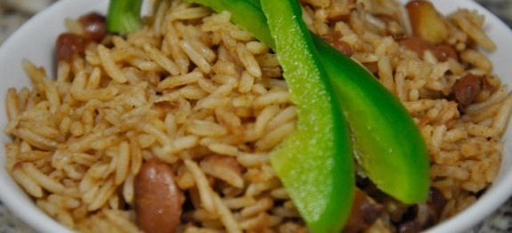

Haitian rice and beans

Description
Needless to say rice and beans are a staple in the carribean. A meal is not a meal unless there is a side of rice and beans. Haitian rice and beans can be made with a variety of beans, but the most pouplar are Pinto, red kidney beans, and black beans. The process is pretty much the same regardless of which beans you use. The dish is very nutritious. Rice is rich in starch and an excellent source of energy. Rice also has iron, vitamin B and protein. Beans also contain a good amount of iron and an even greater amount of protein than rice. Together, they make up a complete protein.
Ingredients
- 3 cups rice
- 1 cup dry beans (Pinto, red, or black beans)
- 8 cups water
- 3 tbs olive oil
- 1 tbs butter
- 1 large onion (diced)
- 1 tsp salt (or to taste)
- 1 tsp ground black pepper
- 3 cloves (1/4 tsp ground cloves)
- 3 cubes chicken bouillon
- 1 whole scotch bonnet pepper
- 2 cloves minced garlic
- 1/2 tsp thyme (2 sprigs)
- 1 cup Coconut Milk
Steps
- In a large pot, add the water, beans, salt, 1 tbs olive oil and allow the beans to cook for about 1 hour on medium high heat or until beans are soft.
- Once cooked, strain the water into a seperate container for later use.
- In another large pot, add 1 tbs of olive oil, and sauté the onions and garlic for about 2 minutes.
- Add coconut milk, chicken bouillon, beans and mix thoroughly.
- Add cloves and 6 cups of the bean water to the pot and bring to boil.
- Mix in the rice and whole scotch bonnet pepper and allow the rice to cook for about 20 min or until there is just a little amount of water left.
- Reduce the heat to medium,add thyme, butter, and cover the pot with a lid and allow the remaining water to be absorbed. About 10-15 min.
- Once cooked fluff the rice and serve.